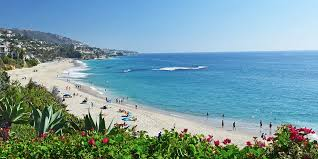

Laguna Beach stands out for its variety of parking options, with both paid and free choices available, and plenty to do in the surrounding area. The beach is within walking distance of great restaurants with ocean views, as well as a well-known gelato spot, making it an ideal place to spend an entire day. However, it can get very crowded, especially in the more popular areas. While the main beach isn’t too far from the parking lots, the walk can still be a bit long depending on where you park. If you explore some of the smaller beaches within Laguna, like Thousand Steps Beach, accessibility becomes more challenging. Parking is mostly limited to street parking, and even when you find a spot, you’ll need to go up and down steep stairs—just as the name suggests. That effort, though, is rewarded with fewer crowds and a more peaceful atmosphere, along with beautiful views. Overall, I would rate the sunsets here an 8/10.
